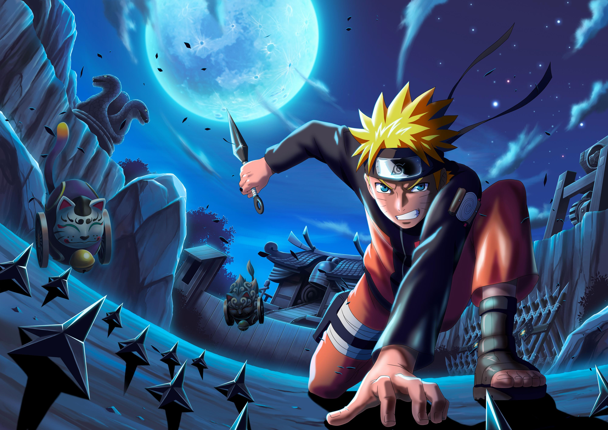

NARUTO
The first season of the Naruto anime series is directed by Hayato Date, and produced by Pierrot and TV Tokyo.Based on Masashi Kishimoto's manga series, the season follows Naruto Uzumaki living in the Hidden Leaf Village, determined to become the next Hokage and gain the respect of the villagers. The first season ran from October 3, 2002 to November 5, 2003 on TV Tokyo.
The English dub ran from September 10, 2005 to November 4, 2006onCartoon Network's Toonami programming block in the United States and YTV's Bionix programming block in Canada.The season's first 52 episodes ran on Adult Swim's relaunched Toonami block in a completely uncut format from December 1, 2012 to November 30, 2013. After the 52nd episode, it was removed from the schedule rotation to make room for its successor series, Naruto: Shippuden.
In Japan, the season released in both VHS and DVD format.A total of twelve volumes were released by Sony Pictures Entertainment between January 1 and December 3, 2003.Episodes from this season were later released on nine DVD compilations by Viz Media between March 28, 2006 and February 20, 2007,with two compilations of thirteen and twelve episodes released for the first season.The first of these compilations was nominated at the American Anime Awards for best package design.In 2009, Viz released another two DVD boxes containing episodes 1-25 and 26-52, respectively.
Seven pieces of theme music are used for the episodes; three opening themes and three closing themes in the Japanese episodes and a single theme for the openings and endings in the English-dubbed version. The three Japanese opening themes are "Rocks" ( R★O★C★K★S) by Hound Dog, used for the first twenty-five episodes, "Haruka Kanata" (遥か彼方, lit. Far Away) by Asian Kung-Fu Generation (used for episodes 26 to 50), and "Kanashimi Wo Yasashisa Ni" (悲しみをやさしさに, lit. Sadness Into Kindness) by Little By Little (used for episodes 51 to 57).The three closing themes are "Wind" by Akeboshi (used until episode 25), "Harmonia" by Rythem (used for episodes 26 to 50), and "Viva Rock" by Orange Range (used for episodes 51 to 57).The opening and ending theme for the English airing is "Rise" by Jeremy Sweet and Ian Nickus, with an instrumental version played as the closing theme.
Naruto is generally a very simple minded, easy going, cheerful person. He often rushes things, and misses obvious things such as Hinata's constant shyness around him.
In the beginning of the series, Naruto is very fun loving, often pulling pranks on fellow villagers. This usually ends in a scolding from Iruka Umino. Naruto later reveals he did these pranks because he liked the attention, as he grew up with no parents or friends. He's also very beginning when he's young, despite being largely unskilled in comparison to his peers.
As the series progresses and Naruto gets older, he eventually starts to become more serious and wises up.
As a Jinchūriki bearing the Nine Tailed Fox, Kurama, Naruto was often jeered at and avoided by most villagers. Because of this, Naruto was largely alone in the early parts of his life, and would often seek out attention by pulling pranks. This would become Naruto's main reason want to become Hokage, so everyone in the village would acknowledge and respect him. Eventually, Naruto's actions towards saving the village (And even the whole world) lead to many villagers respecting and even admiring him. In the movie, Naruto: The Last, Naruto has fans who come from all different villages just to see him.
Naruto has a strong dedication to his friends, often willing to put his life on the line to protect them. Despite his treachery towards the Hidden Leaf Village, Naruto has always considered childhood rival Sasuke Uchiha to be his best friend. In the end of the series, Naruto reveals that he cared for Sasuke so much because he felt they knew the same pain of being alone, and he constantly would chase after him because Naruto did not want to see him hurt when there is no need to.
As Hokage, Naruto seems to have grown even more mature. When Boruto was pulling pranks, Naruto knew this was because he didn't have a father figure, and spent time with him. This shows that Naruto cares deeply for his children.
Naruto is largely unskilled in all types of jutsu, especially in comparison to his peers. His failure of the cloning technique led him to eventually learning the Shadow Clone Jutsu, which is considered to be a Jonin level technique. This move is one of his signature moves, and one he uses commonly through the whole series.
He eventually learns a technique his father invented through Jiraiya called Rasengan. This technique is a visible concentrated ball of chakra that fits in the users hand, capable of dealing very destructive power. This technique also becomes one of Naruto's signature moves, and one he even expands upon, such as with his Rasenshuriken.
Since Naruto has the Nine Tails Fox sealed inside him, he is able to use the Fox's chakra, which is much greater than the average human. Initially Naruto and the Fox hated each other, and would rarely grant Naruto his power unless they were going to die. Eventually, they become friends, and Naruto then refers to the fox by his name, Kurama. At this point, Naruto can use Kurama's chakra at will.
Naruto also learned to access a state called Sage mode. While in this mode, Naruto's senses are greatly enhanced.

🙂!!THE END!!🙂